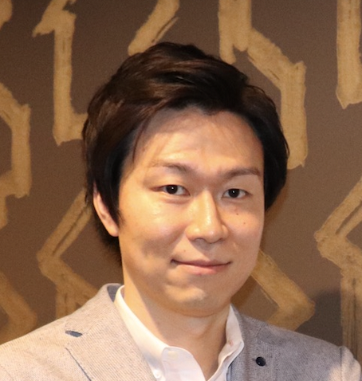

あなたらしさが輝く将来を、
共に創り出す。
神戸大学大学院での工学研究と大手メーカー勤務を経て独立。大人のリカレント教育とAI・Webマーケティングの融合により、知識の循環と個人の才能開花を追求しています。
学術背景
神戸大大学院工学研究科
経営軸
「四方良し」の探求
コア事業
リカレント教育 & AI集客

山口 将輝（Masaki Yamaguchi）
株式会社MYfuture 代表取締役
東京都渋谷区恵比寿
「自分の名前『将輝』に込められた『将来が輝くように』という願いを基盤とし、お客様・ビジネスパートナー・世間・自分自身の『四方』が共に輝く未来を共創することが私の使命です。」
経営思想「四方良し」と問題解決思考
近江商人「三方良し」に「自分自身」を足した独自の意思決定フレームワーク。
本セクションでは、山口氏が実践する意思決定基準「四方良し」を分解します。自己犠牲でも自己利害のみでもなく、「お客様・ビジネスパートナー・世間・自分自身」の全員が持続的に幸福であり続ける仕組みを探求しています。
お客様
本質的な能力開発と選択肢の拡大
ビジネスパートナー
知見の最大化と適正成果の還元
世間
環境負荷低減・社会への貢献
自分自身
事業の持続性と情熱の維持
お客様における「良し」
書籍や一次メディアでは得られない、一流の有識者による実践的コンテンツを提供。コミュニケーション、資産運用、キャリア開発等、大人の学び直しを通じて個人の才能を開花させ、豊かな人生の選択肢を提供します。
💡 トラブル時のマインドセット：「障害は神様からの贈り物（テスト）」
【従来の発想】
問題発生時に当事者間のみで利害を調整しようとし、妥協点（二方良し止まり）を探すため、根本解決に至らないか不満が残る。
【山口氏の「四方良し」アプローチ】
トラブルを「四方（お客様・ビジネスパートナー・世間・自分自身）全てにメリットをもたらす革新的解法を見つけ出すためのテスト」と捉え直し、楽しみながら多角的なアイデアを創出する。
株式会社MYfuture の事業構造とナレッジ・エコシステム
知識の創出者と需要者をAI・Webマーケティング技術で高精度に結ぶ多角展開。
同社は東京都渋谷区恵比寿に拠点を置き、大人のリカレント教育（学び直し）を中核としています。一流の講師陣が持つナレッジを体系化し、最適なユーザー層へ届ける高精度なマーケティングエコシステムを構築しています。
ナレッジ流通メカニズム（プラットフォーム構造）
パブリックイメージとメディア掲載実績
第三者評価から捉える山口将輝氏の起業家像と若年層へのキャリアメッセージ。
メディア露出においては、「理系大学院の論理的思考と人間味あふれる情熱を兼ね備えたリーダー」として評価されています。特にAI時代における自身のスキル研鑽と挑戦の重要性を発信しています。
Radio Leader's
2024年3月23日放送
WEBマーケティング、AI活用、個人の才能を引き出す未来の創発について語る。
THE HUMAN STORY
The VISION 掲載
大手メーカーからの独立経緯、「四方良し」の価値観、挫折を好転させる思考法。
Japan Quality
ブランディング・ラボ
仕事へのこだわり、事業を通じた社会貢献、若者へ向けたキャリア構築のエール。
月刊マスターズ
2020年5月号
創業期からの軌跡、リカレント教育事業の展望と注目の成長企業として紹介。
📣 若者・次世代リーダーへのキャリア・メッセージ
1. 身分が固まる前の「挑戦と試行錯誤」
結婚や昇進等で役割が固まる前の若いうちに、リスクを取って挑戦し、失敗と成功の経験を積むことが、将来の揺るぎない糧となります。
2. AI時代における「自己才能の開花」
AIテクノロジーが発展する今こそ、自分自身の独自の才能やスキルを磨き、それを用いて社会に価値貢献する力を育むことが不可欠です。